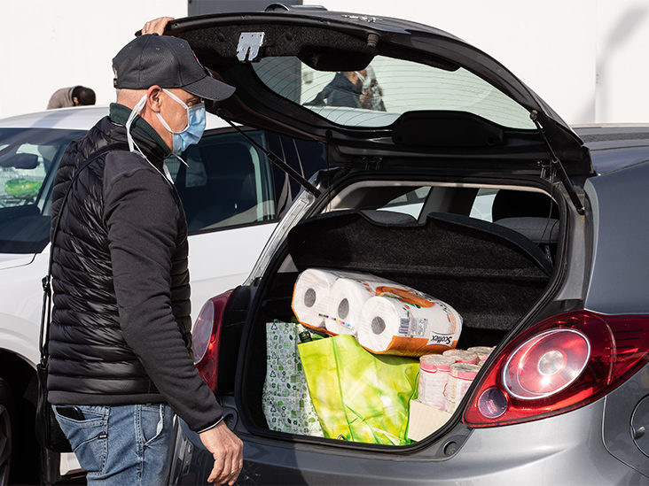
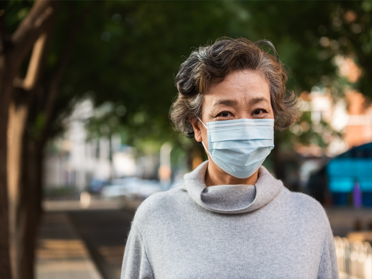
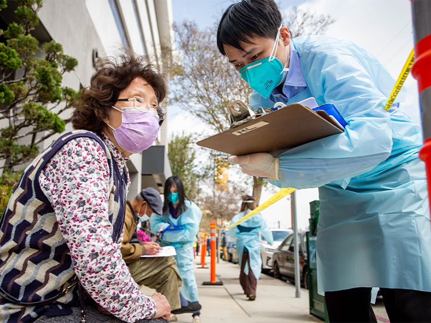

Experts Say COVID-19 Is Airborne: Here’s How You Can Stay Safe
The Centers for Disease Control and Prevention (CDC) updated its coronavirus guidance Monday, now stating that the coronavirus can spread through airborne particles.
Though the coronavirus is still thought to spread primarily through respiratory droplets passed from person to person, the CDC is recognizing that airborne transmission is also a threat since small particles can linger in the air for minutes to hours, be inhaled, and lead to an infection.
The CDC also acknowledges that these minuscule airborne particles can travel farther than 6 feet, particularly when people are talking, singing, or even breathing heavily in indoor environments with poor ventilation.
'People can protect themselves from the virus that causes COVID-19 by staying at least 6 feet away from others, wearing a mask that covers their nose and mouth, washing their hands frequently, cleaning touched surfaces often and staying home when sick,' the CDC stated in a new press release about airborne spread.
The news comes months after more than 230 scientists wrote to the World Health Organization (WHO) urging them to update their guidance pertaining to the risk of airborne spread of the virus that causes COVID-19.
Scientists had to push health officials to update COVID-19 health guidance and recognize that the virus can be spread through these microscopic respiratory droplets, not just within 6 feet but up to several meters in enclosed indoor spaces.
They hope updated guidance will encourage people to take further safety measures — like providing effective air ventilation in buildings and avoiding overcrowding in indoor spaces — to mitigate the risk of airborne transmission.
Research has found that people with the virus can expel pieces of it when they exhale, talk, or cough.
Those tiny viral pieces, called microdroplets, can be so small that they’re able to float in the air and potentially travel a distance of multiple meters.
Some microdroplets can travel across an entire room.
People can then inhale those minuscule viral particles, develop COVID-19, and get sick.
According to the paper sent to the WHO, previous evidence suggests that Middle East respiratory syndrome (MERS) and the flu can also be spread through microdroplets that can potentially travel far distances indoors and be inhaled.
It seems that COVID-19 behaves similarly, but experts still are not sure how often people contract the disease via this type of airborne transmission.
'Originally, it was thought that the major way that the virus was transmitted was from person to person by large particle droplets, which basically only travel about 6 feet or so and fall to the ground very quickly,' said Dr.Dean Winslow, infectious disease physician at Stanford Health Care, in an earlier interview.
Newer research strongly suggests that airborne transmission plays a bigger role than previously thought.
'Small particle aerosols may actually be as important to even more important than these large particle droplets in terms of transmitting the virus,' Winslow said.
The risk is greatest in indoor environments — think crowded bars and restaurants — where there’s limited exchange of air and these small particle aerosols can stay aloft in the air for a significant period of time, Winslow noted.
Major outbreaks happened at a choir practice in Skagit County, Washington, and at a partially enclosed soccer match in Bergamo, Italy.
'If you look retrospectively at where most of the outbreaks have occurred, it’s been in indoor environments,' Winslow said.
So what does this mean for your risk of infection?It is related to two major factors: time and viral exposure.
'It’s a product of the exposure — that is the amount of virus present in the air or atmosphere — times the time you’re exposed,' Winslow said.
A brief exposure to small amounts of these particles is less likely to make you sick than a prolonged exposure to a lot of the virus.
This risk is higher indoors.Outdoors, the aerosols evaporate and disperse much more quickly, according to Winslow.
We’ll email you the latest developments about the novel coronavirus and Healthline's top health news stories, daily.
Handwashing, physical distancing, and donning a face mask are key safety measures to protect yourself from COVID-19.
Face masks are critical in reducing the risk of spreading or being exposed to the virus via aerosols.
'Since aerosolized droplets (containing viral particles) may remain in poorly ventilated rooms for minutes to several hours, the importance of wearing a mask while indoors should strongly be considered,' Dr.Robert Glatter, an emergency physician at the Lenox Hill Hospital in New York City.said.
Mask wearing has become common, even required in some states, over the past few weeks, but people need to consider wearing them any time they are indoors with people outside their household.
The face coverings protect not only yourself, but those around you, too, in the event you’re asymptomatic and contagious.
Winslow also suggests avoiding crowded indoor environments, like bars or indoor dining, and minimizing trips to the grocery store.
'We must take the necessary precautions to protect ourselves and our families as though [airborne transmission] may constitute a major mode of transmission,' Glatter said.
The CDC has is now warning Americans that the virus that causes COVID-19 can be spread via airborne transmission.
Health officials originally thought the coronavirus spread primarily through large respiratory droplets, but newer research suggests the virus spreads readily through much smaller particles that can hang in the air for hours and be inhaled.
To further protect themselves, people should wear face masks and avoid crowded environments whenever possible.
Posted On: 2020-10-07T00:00:00
Posted By: Julia Ries



Content Date: 2020-10-07
Download Date: 2021-04-21
Document ID: L0C04AJMX